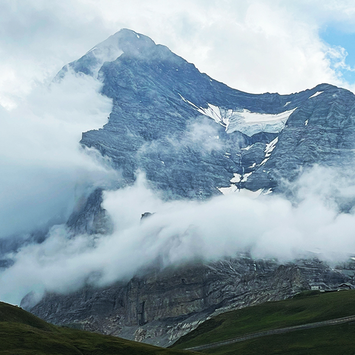

I moved to Switzerland from Germany a few years ago. Thank goodness I ended up in Bern, the capital of Switzerland. From here, it's not far to the Bernese Oberland and there are plenty of wonderful hiking trails with magnificent views of the Eiger, Mönch and Jungfrau. All three mountains are around 4000 meters high and really impressive. I wouldn't say I'm a hiking fanatic, but when the time allows and the sun is shining, I go hiking and I particularly enjoy hiking in this area. The two photos are from my last hike from Grindelwald to Kleine Scheidegg.
The sun wasn't shining that day and some rain was forecast for the afternoon. Well, the good thing was that I was well equipped for this hike, because a pleasant 24 degrees at the start of the hike turned into a lousy 10 degrees at the highest point of the hike, the hoped-for good view into the distance and of the four-thousand-metre peaks turned into thick clouds and dryness turned into rain. But none of that mattered to me. For me, it was once again a wonderful time in one of my absolute favorite places in the world. But as you can see, the weather gods had mercy. The clouds cleared and I was able to take a quick look at the Wetterhorn (header picture) and then a short view of the Eiger (small picture).